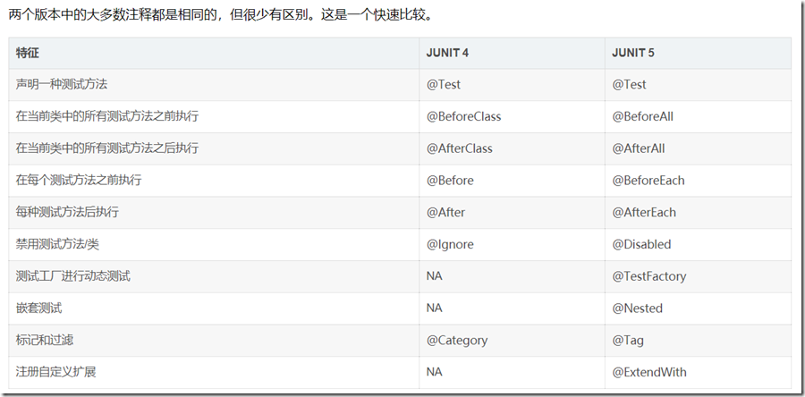

目录
SpringBoot版本为2.x, 2.4.0开始版本号没有.RELEASE后缀
第三方组件
开发小技巧
SpringBoot开发小技巧-对象属性拷贝BeanUtils.copyProperties
SpringBoot开发小技巧-打印Mybatis中的sql语句
推荐idea插件
- Maven Helper: 查看Maven引入的jar包是否有冲突
- Codota: 右键选中代码会提示很多相关API用法，节省不少查阅资料的时间
- IntelliJad：是一个Java class文件的反编译工具，可以对Jar选择class文件右键Decompile，会出现反编译的结果
开发者工具
添加如下依赖到pom.xml：
1 | <dependency> |
修改源码后，使用快捷键Ctrl + F9手动构建项目后，Spring Boot会自动重新加载
默认配置下，针对/static、/public和/templates目录中的文件修改，不会自动重启，因为禁用缓存后，这些文件的修改可以实时更新
如果不想手动构建，需要对IDEA做一些配置更改
使用springboot的maven插件spring-boot-maven-plugin，可以直接打出可运行的jar：
1 | mvn clean package |
运行后在target文件夹下就可以看到jar了，直接用Java命令即可运行:
1 | java -jar springboot-demo-jar-1.0-SNAPSHOT.jar |
如果不喜欢默认的项目名+版本号作为运行jar文件名，可以加一个配置指定文件名:
1 | <project ...> |
测试
springboot2.x的版本, 默认使用的是junit5版本, junit4和junit5两个版本差别比较大，需要注意下用法

1 | import org.junit.jupiter.api.Test; |
测试样例可以参考官方教程
运行监控
Spring Boot内置了一个监控功能Actuator:
1 | <dependency> |
运行项目后输入http://localhost:8080/actuator，可以查看应用程序当前状态
默认只有health和info可使用web访问，要暴露更多的访问点给Web，需要在application.yml中加上配置：
1 | management: |
常用的如下:
| Endpoint ID | Description |
|---|---|
| auditevents | 显示应用暴露的审计事件 (比如认证进入、订单失败) |
| info | 显示应用的基本信息 |
| health | 显示应用的健康状态 |
| metrics | 显示应用多样的度量信息 |
| loggers | 显示和修改配置的loggers |
| logfile | 返回log file中的内容(如果logging.file或者logging.path被设置) |
| httptrace | 显示HTTP足迹，最近100个HTTP request/repsponse |
| env | 显示当前的环境特性 |
| flyway | 显示数据库迁移路径的详细信息 |
| liquidbase | 显示Liquibase 数据库迁移的纤细信息 |
| shutdown | 让你逐步关闭应用 |
| mappings | 显示所有的@RequestMapping路径 |
| scheduledtasks | 显示应用中的调度任务 |
| threaddump | 执行一个线程dump |
| heapdump | 返回一个GZip压缩的JVM堆dump |
在运行时改变日志等级
loggers endpoint也允许你在运行时改变应用的日志等级。
举个例子，为了改变root logger的等级为DEBUG ，发送一个POST请求到http://localhost:8080/actuator/loggers/root，加入如下参数:
1 | { |
这个功能对于线上问题的排查非常有用。
同时，你可以通过传递null值给configuredLevel来重置日志等级。
spring-boot-autoconfigure 包含了Spring Boot对于第三方库的自动配置，在编写自定义配置时可以参考使用
如果是idea使用gradle编译的话，如果出现中文乱码则打开Help>Edit Custom VM Options，在最后一行加上:
1 | -Dfile.encoding=UTF-8 |
最佳实践
关于@Autowired与@Resource
如果在idea中使用类似:
1 | class UserServiceImpl { |
基于字段的依赖注入方式时会有黄色警告(不建议使用字段注入)：
- 对于必需的依赖项，建议使用基于构造函数的注入，以使它们成为不可变的，并防止它们为null。
- 对于可选的依赖项，建议使用基于Setter的注入
1 |
|
@Autowired通过类型装配，若注入类型一样的对象就无法选择具体注入哪一个，则要配合@Qualifiler结合使用；@Resource默认通过类型名注入
一般模块间的依赖推荐使用：
- 存在多态，推荐使用@Resource
- 允许不存在，推荐@Autowired并设置required属性为false
@Component
@Component注解默认实例化的对象是单例，如果想声明成多例对象可以使用@Scope(“prototype”), Scope的全部可选项
- singleton 全局只有一个实例，即单例模式
- prototype 每次注入Bean都是一个新的实例
- request 每次HTTP请求都会产生新的Bean
- session 每次HTTP请求都会产生新的Bean，该Bean在仅在当前session内有效
- global session 每次HTTP请求都会产生新的Bean，该Bean在 当前global Session（基于portlet的web应用中）内有效
对于不常使⽤的 Bean 设置延迟加载，这样偶尔使⽤的时候再加载，不必要从⼀开始该 Bean 就占 ⽤资源
在Bean的初始化和清理方法上标记@PostConstruct和@PreDestroy
先使用@PropertySource读取配置文件，然后通过@Value以${key:defaultValue}的形式注入，可以极大地简化读取配置的麻烦
Profile: 创建某个Bean时，Spring容器可以根据注解@Profile来决定是否创建
Conditional: Spring还可以根据@Conditional决定是否创建某个Bean
FactoryBean可以⽣成某⼀个类型的Bean实例，也就是说我们可以借助于它⾃定义Bean的创建过程，实现FactoryBean接口即可(获取FactoryBean，需要在id之前添加“&”)。
如果你想要将第三方库中的组件装配到你的应用中，在这种情况下，是没有办法在它的类上添加@Component注解的，因此就不能使用自动化装配的方案了，但是我们可以使用@Bean。
pom中使用阿里云镜像
1 | <repositories> |
使用gradle的话:
1 | maven { url 'http://maven.aliyun.com/nexus/content/groups/public/' } |
第三方库想找到最新版本，除到各自官网查找外，可以到Maven Central Repository Search 中搜索
中文乱码解决
spring boot 2.4.2 如果控制台存在中文乱码问题，需修改application.yml:
1 | logging: |
- 使用spring-boot:run时控制台输出乱码
pom.xml中修改
1 | <plugin> |
Aware
Spring框架中提供了许多实现了Aware接口的类，这些类主要是为了辅助Spring访问容器中的数据:
- BeanNameAware：能够获取bean的名称
- BeanFactoryAware：获取当前BeanFactory，这样可以调用容器的服务
- ApplicationContextAware：获取ApplicationContext
- MessageSourceAware：获取MessageSource相关文本信息
- ApplicationEventPublisherAware: 获取ApplicationEventPublisher，用于发布事件
- ResourceLoaderAware: 获取资源加载器，可以获取外部资源文件
- ……
使用时直接实现对应接口即可:
1 |
|
Spring Retry
spring-retry 优雅引入重试机制：只需要在需要重试的方法上加上@Retryable注解并配置重试策略属性就好，不需要太多侵入代码：
- delay：默认1秒
- maxDelay：最大重试等待时间
- multiplier：用于计算下一个延迟时间的乘数(延迟大于0时生效)
- random：随机重试等待时间
1 | <dependencys> |
一定不要忘了在启动类上加上 @EnableRetry
使用
1 |
|
不过需要注意的是如果被 @Retryable 注解的方法的调用方和被调用方处于同一个类中，那么重试将会失效
另外Spring的重试机制只支持对异常进行捕获，而无法对返回值进行校验判断重试。如果想要更灵活的重试策略可以使用Guava Retry
面试常问
谈谈你对IOC 和 AOP 的理解？他们的实现原理是什么？
IOC 叫做控制反转，指的是通过Spring来管理对象的创建、配置和生命周期，这样相当于把控制权交给了
Spring，不需要人工来管理对象之间复杂的依赖关系，这样做的好处就是解耦。在Spring里面，主要提供
了 BeanFactory 和 ApplicationContext 两种 IOC 容器，通过他们来实现对 Bean 的管理。
AOP 叫做面向切面编程，他是一个编程范式，目的就是提高代码的模块性。Spring AOP 基于动态代理的
方式实现，如果是实现了接口的话就会使用 JDK 动态代理，反之则使用 CGLIB 代理，Spring中 AOP 的应
用主要体现在 事务、日志、异常处理等方面，通过在代码的前后做一些增强处理，可以实现对业务逻辑的
隔离，提高代码的模块化能力，同时也是解耦。Spring主要提供了 Aspect 切面、JoinPoint 连接点、
PointCut 切入点、Advice 增强等实现方式。
Spring Boot 启动流程
- 准备环境，根据不同的环境创建不同的Environment
- 准备、加载上下文，为不同的环境选择不同的Spring Context，然后加载资源，配置Bean
- 初始化，这个阶段刷新Spring Context，启动应用
网上搜到的流程图